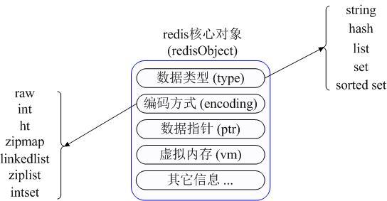
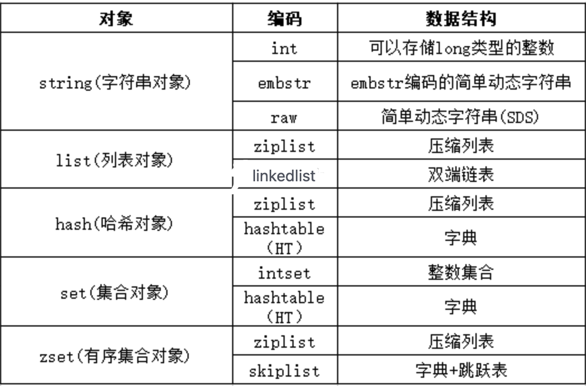
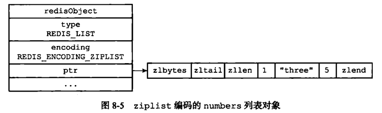
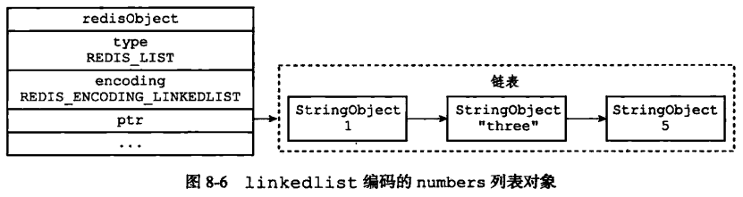
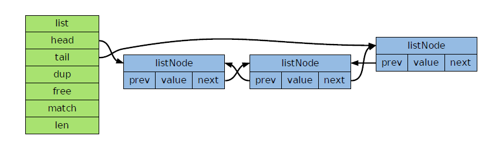
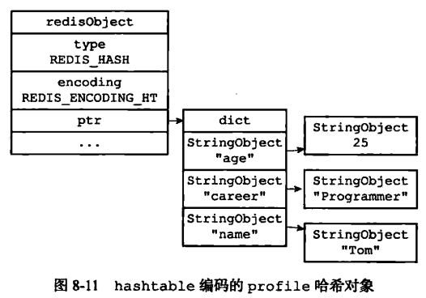
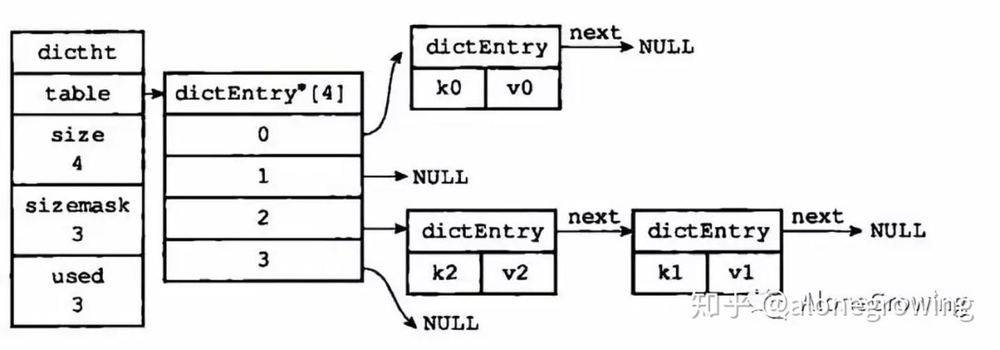

Redis知识汇总
Redis五大基本数据结构
Redis支持5种数据类型：string（字符串），hash（哈希），list（列表），set（集合）及zset(sorted set：有序集合)
Redis内部内存通过下图描述不同数据类型的：

首先Redis内部使用一个redisObject对象来表示所有的key和value，redisObject最主要的信息如上图所示：type代表一个value对象具体是何种数据类型，encoding是不同数据类型在redis内部的存储方式，比如：type=string代表value存储的是一个普通字符串，那么对应的encoding可以是raw或者是int，如果是int则代表实际redis内部是按数值型类存储和表示这个字符串的，当然前提是这个字符串本身可以用数值表示，比如:”123” “456”这样的字符串。
这里需要特殊说明一下vm字段，只有打开了Redis的虚拟内存功能，此字段才会真正的分配内存，该功能默认是关闭状态的。通过上图我们可以发现Redis使用redisObject来表示所有的key/value数据是比较浪费内存的，当然这些内存管理成本的付出主要也是为了给Redis不同数据类型提供一个统一的管理接口，实际作者也提供了多种方法帮助我们尽量节省内存使用。
各个基本结构的在redisObject中对应的数据类型和编码方式如下图所示：

String
int 编码：保存的是可以用 long 类型表示的整数值。
embstr 编码：保存长度小于44字节的字符串（redis3.2版本之前是39字节，之后是44字节）。
raw 编码：保存长度大于44字节的字符串（redis3.2版本之前是39字节，之后是44字节）。
当String表示字符串的时候，是通过简单动态字符串（simple dynamic string,SDS）的抽象类型,是Redis自己创建的类型
- SDS定义为：
1
2
3
4
5
6
7
8
9
10
11
12struct sdshdr{
//记录buf数组中已使用字节的数量
//等于 SDS 保存字符串的长度
int len;
//记录 buf 数组中未使用字节的数量，执行append操作时，该值才有意义
int free;
//字节数组，用于保存字符串
char buf[];
}用SDS保存字符串 “Redis”具体图示如下：

SDS 数据类型的定义：
1、len 保存了SDS保存字符串的长度
2、buf[] 数组用来保存字符串的每个元素
3、free j记录了 buf 数组中未使用的字节数量
上面的定义相对于 C 语言对于字符串的定义，多出了 len 属性以及 free 属性。为什么不使用C语言字符串实现，而是使用 SDS呢？这样实现有什么好处？
- 常数复杂度获取字符串长度，直接通过len获得长度，时间复杂度O(1)
- 杜绝缓冲区溢出:SDS 数据类型，在进行字符修改的时候，会首先根据记录的 len 属性检查内存空间是否满足需求，如果不满足，会进行相应的空间扩展，然后在进行修改操作，所以不会出现缓冲区溢出。
- 减少修改字符串的内存重新分配次数:因为有额外的free空间，一般会满足增加的字符串
- 二进制安全：因为C字符串以空字符作为字符串结束的标识，而对于一些二进制文件（如图片等），内容可能包括空字符串，因此C字符串无法正确存取；而所有 SDS 的API 都是以处理二进制的方式来处理 buf 里面的元素，并且 SDS 不是以空字符串来判断是否结束，而是以 len 属性表示的长度来判断字符串是否结束。
预分配的理解：
当执行追加操作时，比如现在给key=‘Hello World’的字符串后追加‘ again!’则这时的len=18，free由0变成了18，此时的buf=’Hello World again!\0 ‘，也就是buf的内存空间是18+18+1=37个字节，其中‘\0’占1个字节redis给字符串多分配了18个字节的预分配空间，所以下次还有append追加的时候，如果预分配空间足够，就无须在进行空间分配了。在当前版本中，当新字符串的长度小于1M时，redis会分配他们所需大小一倍的空间，当大于1M的时候，就为他们额外多分配1M的空间。最大512M
这种分配策略会浪费内存资源吗？
执行过APPEND 命令的字符串会带有额外的预分配空间，这些预分配空间不会被释放，除非该字符串所对应的键被删除，或者等到关闭Redis 之后，再次启动时重新载入的字符串对象将不会有预分配空间。因为执行APPEND 命令的字符串键数量通常并不多，占用内存的体积通常也不大，所以这一般并不算什么问题。另一方面，如果执行APPEND 操作的键很多，而字符串的体积又很大的话，那可能就需要修改Redis 服务器，让它定时释放一些字符串键的预分配空间，从而更有效地使用内存。
List
List编码可以是 ziplist(压缩列表) 和 linkedlist(双端链表)。
比如我们执行以下命令，创建一个 key = ‘numbers’，value = ‘1 three 5’ 的三个值的列表。
1 | rpush numbers 1 "three" 5 |
ziplist 编码表示如下：

一段连续的内存空间：Byte，头，长度，内容，结束
linkedlist表示如下：

- 编码转换
当同时满足下面两个条件时，使用ziplist（压缩列表）编码：
1、列表保存元素个数小于512个
2、每个元素长度小于64字节
不能满足这两个条件的时候使用 linkedlist 编码。
上面两个条件可以在redis.conf 配置文件中的 list-max-ziplist-value选项和 list-max-ziplist-entries 选项进行配置。
linkedList双向链表的实现
双向链表是由listNode和list两个数据结构组成，如下：

listNode是双向链表的节点，包含
prev(前驱指针)
next(后继指针)
value(数值)
list是双向链表本身，包含
- head（表头指针）
- tail（表尾指针）
- dup（复制函数）
- free（释放函数）
- match（对比函数）
- len（节点数量）
从结构上总结出他们的性能特征：
- listNode带有prev和next两个指针，因此对链表的遍历可以在两个方向上进行：从表头到表尾，或者从表尾到表头。
- list保存了head和tail两个指针，因此对链表的表头和表尾进行插入的复杂度都是θ（1）——这是实现LPUSH、RPOP、RPUSH、LPOP的关键。
- list带有保存九点数量的len属性，所以计算链表长度的复杂度为θ（1），所以LLEN的命令性能很高。
Hash
哈希对象的键是一个字符串类型，值是一个键值对集合。
- 编码
哈希对象的编码可以是 ziplist 或者 hashtable。
当使用ziplist，也就是压缩列表作为底层实现时，新增的键值对是保存到压缩列表的表尾。比如执行以下命令：
1 | hset profile name "Tom" |
如果使用ziplist，profile 存储如下：

当使用 hashtable 编码时，上面命令存储如下：

hashtable 编码的哈希表对象底层使用字典数据结构，哈希对象中的每个键值对都使用一个字典键值对。
在前面介绍压缩列表时，我们介绍过压缩列表是Redis为了节省内存而开发的，是由一系列特殊编码的连续内存块组成的顺序型数据结构，相对于字典数据结构，压缩列表用于元素个数少、元素长度小的场景。其优势在于集中存储，节省空间。
- 编码转换
和上面列表对象使用 ziplist 编码一样，当同时满足下面两个条件时，使用ziplist（压缩列表）编码：
1、列表保存元素个数小于512个
2、每个元素长度小于64字节
不能满足这两个条件的时候使用 hashtable 编码。第一个条件可以通过配置文件中的 set-max-intset-entries 进行修改。
hashtable
hashtable结构如下图所示：

- Table指向一个数组列表，里面包含dictEntry节点
- dictEntry会指向下一个相同hash值的dictEntry，形成链
代码如下：
1 | typedef struct dictht{ |
1 | typedef struct dictEntity{ |
由上图可知每一个dictEntry结构都是一个健值对，且有一个next指针，来维持节点之间的链表形态。下面我们详细看下每个字段的具体含义：
- key 是键值对中的键；
- v 是键值对中的值，它是一个联合类型，方便存储各种结构；
- next 是链表指针，指向下一个哈希表节点，他将多个哈希值相同的键值对串联在一起，用于解决键冲突；
Set
- 编码
集合对象的编码可以是 intset 或者 hashtable。
intset 编码的集合对象使用整数集合作为底层实现，集合对象包含的所有元素都被保存在整数集合中。
hashtable 编码的集合对象使用 字典作为底层实现，字典的每个键都是一个字符串对象，这里的每个字符串对象就是一个集合中的元素，而字典的值则全部设置为 null。这里可以类比Java集合中HashSet 集合的实现，HashSet 集合是由 HashMap 来实现的，集合中的元素就是 HashMap 的key，而 HashMap 的值都设为 null。
1 | SADD numbers 1 3 5 |

- 编码转换
当集合同时满足以下两个条件时，使用 intset 编码：
1、集合对象中所有元素都是整数
2、集合对象所有元素数量不超过512
不能满足这两个条件的就使用 hashtable 编码。第二个条件可以通过配置文件的 set-max-intset-entries 进行配置。
Zset
和上面的集合对象相比，有序集合对象是有序的。与列表使用索引下标作为排序依据不同，有序集合为每个元素设置一个分数（score）作为排序依据。
- 编码
有序集合的编码可以是 ziplist 或者 skiplist。
ziplist 编码的有序集合对象使用压缩列表作为底层实现，每个集合元素使用两个紧挨在一起的压缩列表节点来保存，第一个节点保存元素的成员，第二个节点保存元素的分值。并且压缩列表内的集合元素按分值从小到大的顺序进行排列，小的放置在靠近表头的位置，大的放置在靠近表尾的位置。
1 | ZADD price 8.5 apple 5.0 banana 6.0 cherry |

skiplist： 编码的有序集合对象使用 zet 结构作为底层实现，一个 zset 结构同时包含一个字典和一个跳跃表：
编码转换
当有序集合对象同时满足以下两个条件时，对象使用 ziplist 编码：
1、保存的元素数量小于128；
2、保存的所有元素长度都小于64字节。
不能满足上面两个条件的使用 skiplist 编码。以上两个条件也可以通过Redis配置文件zset-max-ziplist-entries 选项和 zset-max-ziplist-value 进行修改。
实际应用场景
String
- 缓存功能：字符串最经典的使用场景，redis最为缓存层，Mysql作为储存层，绝大部分请求数据都是 redis中获取，由于redis具有支撑高并发特性，所以缓存通常能起到加速读写和降低 后端压力的作用。
- 计数器：许多运用都会使用redis作为计数的基础工具，他可以实现快速计数、查询缓存的功能， 同时数据可以一步落地到其他的数据源。 如：视频播放数系统就是使用redis作为视频播放数计数的基础组件。
- 共享session：出于负载均衡的考虑，分布式服务会将用户信息的访问均衡到不同服务器上， 用户刷新一次访问可能会需要重新登录，为避免这个问题可以用redis将用户session集中管理， 在这种模式下只要保证redis的高可用和扩展性的，每次获取用户更新或查询登录信息 都直接从redis中集中获取。
- 限速：处于安全考虑，每次进行登录时让用户输入手机验证码，为了短信接口不被频繁访问， 会限制用户每分钟获取验证码的频率。
List
- 关注列表，粉丝列表
- 消息队列
Hash
- 哈希结构相对于字符串序列化缓存信息更加直观，并且在更新操作上更加便捷。 所以常常用于用户信息等管理，
Set
- 用户的标签
- 共同好友
Zset
- 排行榜
Redis三大特殊类型
HyperLogLogs（基数统计）
- 什么是基数？
举个例子，A = {1, 2, 3, 4, 5}， B = {3, 5, 6, 7, 9}；那么基数（不重复的元素）= 1, 2, 4, 6, 7, 9； （允许容错，即可以接受一定误差）
- HyperLogLogs 基数统计用来解决什么问题？
这个结构可以非常省内存的去统计各种计数，比如注册 IP 数、每日访问 IP 数、页面实时UV、在线用户数，共同好友数等。
- 它的优势体现在哪？
一个大型的网站，每天 IP 比如有 100 万，粗算一个 IP 消耗 15 字节，那么 100 万个 IP 就是 15M。而 HyperLogLog 在 Redis 中每个键占用的内容都是 12K，理论存储近似接近 2^64 个值，不管存储的内容是什么，它一个基于基数估算的算法，只能比较准确的估算出基数，可以使用少量固定的内存去存储并识别集合中的唯一元素。而且这个估算的基数并不一定准确，是一个带有 0.81% 标准错误的近似值（对于可以接受一定容错的业务场景，比如IP数统计，UV等，是可以忽略不计的）。
- 基数统计用到了伯努利方程
Bitmap （位存储）
Bitmap 即位图数据结构，都是操作二进制位来进行记录，只有0 和 1 两个状态。
- 用来解决什么问题？
比如：统计用户信息，活跃，不活跃！ 登录，未登录！ 打卡，不打卡！ 两个状态的，都可以使用 Bitmaps！
如果存储一年的打卡状态需要多少内存呢？ 365 天 = 365 bit 1字节 = 8bit 46 个字节左右！
- 相关命令使用
使用bitmap 来记录 周一到周日的打卡！ 周一：1 周二：0 周三：0 周四：1
geospatial (地理位置)
Redis 的 Geo 在 Redis 3.2 版本就推出了! 这个功能可以推算地理位置的信息: 两地之间的距离, 方圆几里的人
持久化：RDB和AOF机制详解
RDB 持久化
RDB 就是 Redis DataBase 的缩写，中文名为快照/内存快照，RDB持久化是把当前进程数据生成快照保存到磁盘上的过程，由于是某一时刻的快照，那么快照中的值要早于或者等于内存中的值。
触发rdb持久化的方式有2种，分别是手动触发和自动触发。
手动触发
手动触发分别对应save和bgsave命令
save命令：阻塞当前Redis服务器，直到RDB过程完成为止，对于内存 比较大的实例会造成长时间阻塞，线上环境不建议使用
bgsave命令：Redis进程执行fork操作创建子进程，RDB持久化过程由子 进程负责，完成后自动结束。阻塞只发生在fork阶段，一般时间很短
bgsave流程图如下所示

具体流程如下：
- redis客户端执行bgsave命令或者自动触发bgsave命令；
- 主进程判断当前是否已经存在正在执行的子进程，如果存在，那么主进程直接返回；
- 如果不存在正在执行的子进程，那么就fork一个新的子进程进行持久化数据，fork过程是阻塞的，fork操作完成后主进程即可执行其他操作；
- 子进程先将数据写入到临时的rdb文件中，待快照数据写入完成后再原子替换旧的rdb文件；
- 同时发送信号给主进程，通知主进程rdb持久化完成，主进程更新相关的统计信息（info Persitence下的rdb_*相关选项）。
自动触发
在以下4种情况时会自动触发
redis.conf中配置
save m n，即在m秒内有n次修改时，自动触发bgsave生成rdb文件；主从复制时，从节点要从主节点进行全量复制时也会触发bgsave操作，生成当时的快照发送到从节点；
执行debug reload命令重新加载redis时也会触发bgsave操作；
默认情况下执行shutdown命令时，如果没有开启aof持久化，那么也会触发bgsave操作；
RDB 更深入理解
RDB中的核心思路是Copy-on-Write，来保证在进行快照操作的这段时间，需要压缩写入磁盘上的数据在内存中不会发生变化。在正常的快照操作中，一方面Redis主进程会fork一个新的快照进程专门来做这个事情，这样保证了Redis服务不会停止对客户端包括写请求在内的任何响应。另一方面这段时间发生的数据变化会以副本的方式存放在另一个新的内存区域，待快照操作结束后才会同步到原来的内存区域。
举个例子：如果主线程对这些数据也都是读操作（例如图中的键值对 A），那么，主线程和 bgsave 子进程相互不影响。但是，如果主线程要修改一块数据（例如图中的键值对 C），那么，这块数据就会被复制一份，生成该数据的副本。然后，bgsave 子进程会把这个副本数据写入 RDB 文件，而在这个过程中，主线程仍然可以直接修改原来的数据。新生成的RDB文件会替换以前的RDB文件。

RDB优缺点
优点
- RDB文件是某个时间节点的快照，默认使用LZF算法进行压缩，压缩后的文件体积远远小于内存大小，适用于备份、全量复制等场景；
- Redis加载RDB文件恢复数据要远远快于AOF方式；
缺点
- RDB方式实时性不够，无法做到秒级的持久化；
- 每次调用bgsave都需要fork子进程，fork子进程属于重量级操作，频繁执行成本较高；
- RDB文件是二进制的，没有可读性，AOF文件在了解其结构的情况下可以手动修改或者补全；
- 版本兼容RDB文件问题；
AOF 持久化
Append Only File,redis是“写后”日志，Redis先执行命令，把数据写入内存，然后才记录日志。日志里记录的是Redis收到的每一条命令，这些命令是以文本形式保存。
AOF日志采用写后日志，即先写内存，后写日志。

为什么采用写后日志？
Redis要求高性能，采用写日志有两方面好处：
- 避免额外的检查开销：Redis 在向 AOF 里面记录日志的时候，并不会先去对这些命令进行语法检查。所以，如果先记日志再执行命令的话，日志中就有可能记录了错误的命令，Redis 在使用日志恢复数据时，就可能会出错。
- 不会阻塞当前的写操作
但这种方式存在潜在风险：
- 如果命令执行完成，写日志之前宕机了，会丢失数据。
- 主线程写磁盘压力大，导致写盘慢，阻塞后续操作
如何实现AOF
AOF日志记录Redis的每个写命令，步骤分为：命令追加（append）、文件写入（write）和文件同步（sync）。
- 命令追加 当AOF持久化功能打开了，服务器在执行完一个写命令之后，会以协议格式将被执行的写命令追加到服务器的 aof_buf 缓冲区。
- 文件写入和同步 关于何时将 aof_buf 缓冲区的内容写入AOF文件中，Redis提供了三种写回策略：

Always，同步写回：每个写命令执行完，立马同步地将日志写回磁盘；
Everysec，每秒写回：每个写命令执行完，只是先把日志写到AOF文件的内存缓冲区，每隔一秒把缓冲区中的内容写入磁盘；
No，操作系统控制的写回：每个写命令执行完，只是先把日志写到AOF文件的内存缓冲区，由操作系统决定何时将缓冲区内容写回磁盘。
redis.conf中配置AOF
默认情况下，Redis是没有开启AOF的，可以通过配置redis.conf文件来开启AOF持久化，关于AOF的配置如下：
1 | # appendonly参数开启AOF持久化 |
以下是Redis中关于AOF的主要配置信息：
appendonly：默认情况下AOF功能是关闭的，将该选项改为yes以便打开Redis的AOF功能。
appendfilename：这个参数项很好理解了，就是AOF文件的名字。
appendfsync：这个参数项是AOF功能最重要的设置项之一，主要用于设置“真正执行”操作命令向AOF文件中同步的策略。
RDB和AOF混合方式
Redis 4.0 中提出了一个混合使用 AOF 日志和内存快照的方法。简单来说，内存快照以一定的频率执行，在两次快照之间，使用 AOF 日志记录这期间的所有命令操作。
4.0版本的混合持久化默认关闭的，通过aof-use-rdb-preamble配置参数控制，yes则表示开启，no表示禁用，默认是禁用的。
这样一来，快照不用很频繁地执行，这就避免了频繁 fork 对主线程的影响。而且，AOF 日志也只用记录两次快照间的操作，也就是说，不需要记录所有操作了，因此，就不会出现文件过大的情况了，也可以避免重写开销。
如下图所示，T1 和 T2 时刻的修改，用 AOF 日志记录，等到第二次做全量快照时，就可以清空 AOF 日志，因为此时的修改都已经记录到快照中了，恢复时就不再用日志了。

这个方法既能享受到 RDB 文件快速恢复的好处，又能享受到 AOF 只记录操作命令的简单优势, 实际环境中用的很多。
从持久化中恢复数据
其实想要从这些文件中恢复数据，只需要重新启动Redis即可。我们还是通过图来了解这个流程：

- redis重启时判断是否开启aof，如果开启了aof，那么就优先加载aof文件；
- 如果aof存在，那么就去加载aof文件，加载成功的话redis重启成功，如果aof文件加载失败，那么会打印日志表示启动失败，此时可以去修复aof文件后重新启动；
- 若aof文件不存在，那么redis就会转而去加载rdb文件，如果rdb文件不存在，redis直接启动成功；
- 如果rdb文件存在就会去加载rdb文件恢复数据，如加载失败则打印日志提示启动失败，如加载成功，那么redis重启成功，且使用rdb文件恢复数据；
那么为什么会优先加载AOF呢？因为AOF保存的数据更完整，通过上面的分析我们知道AOF基本上最多损失1s的数据。